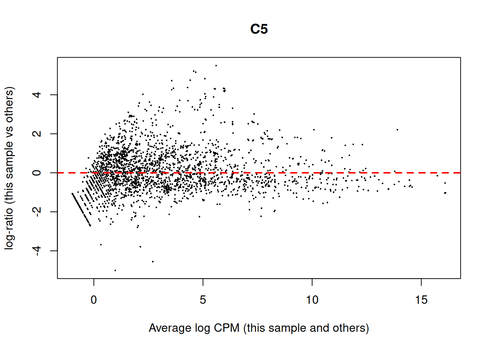
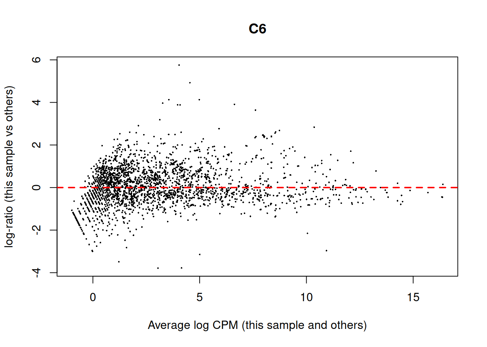
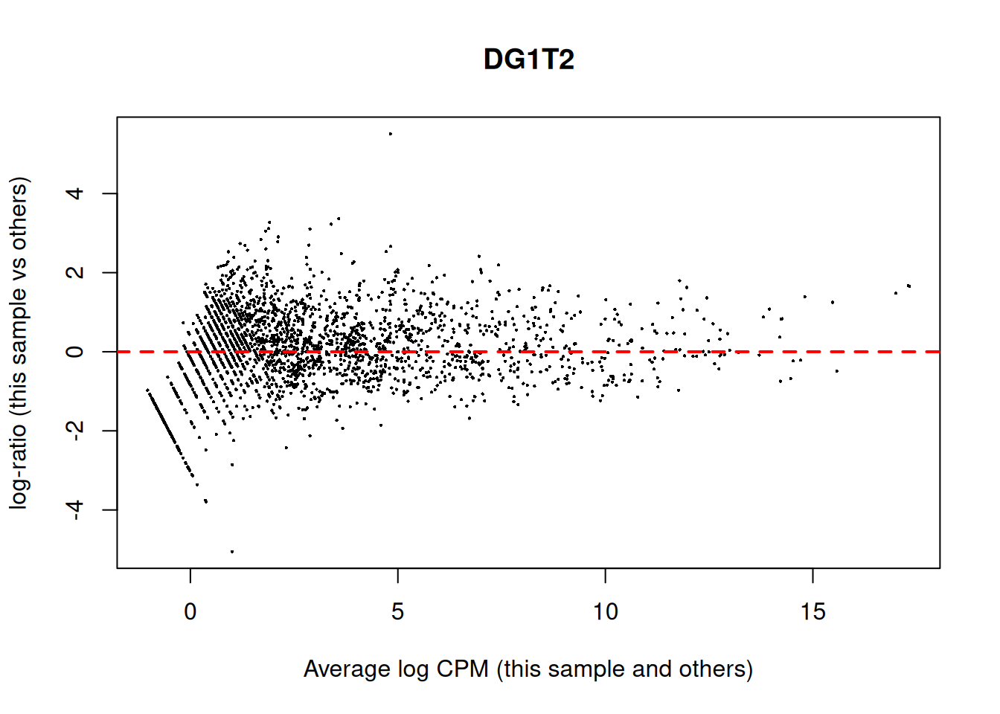
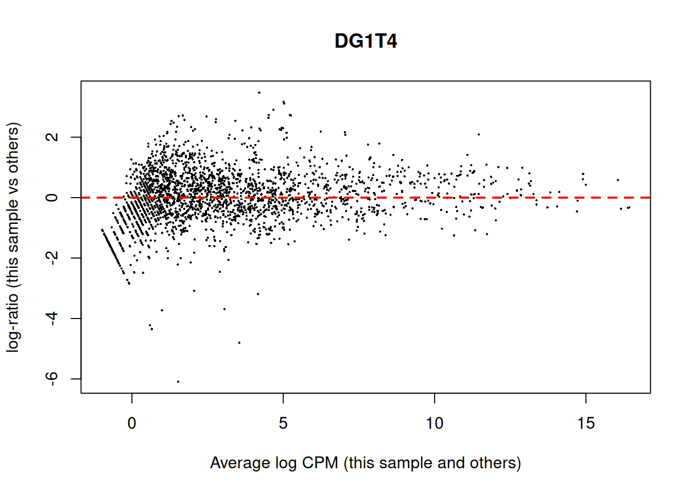
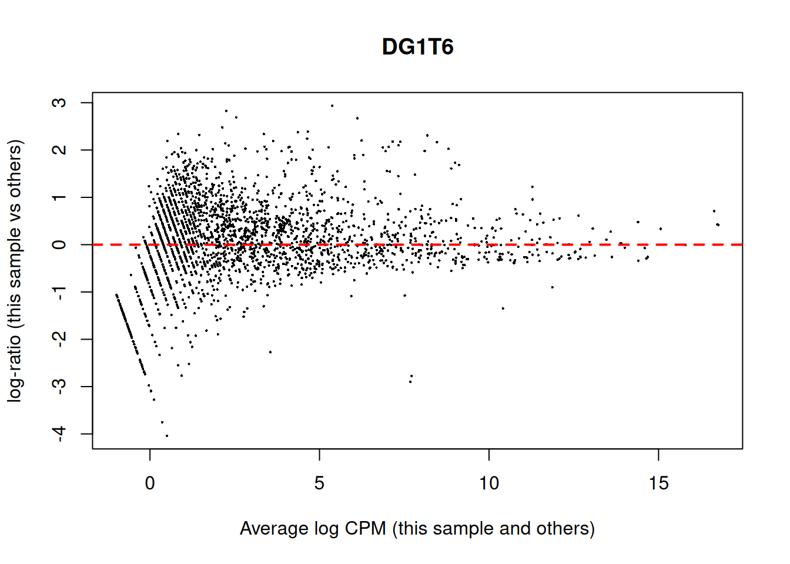
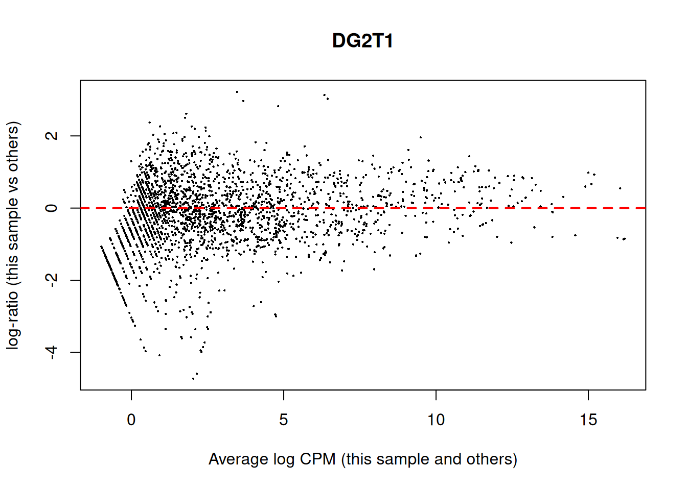
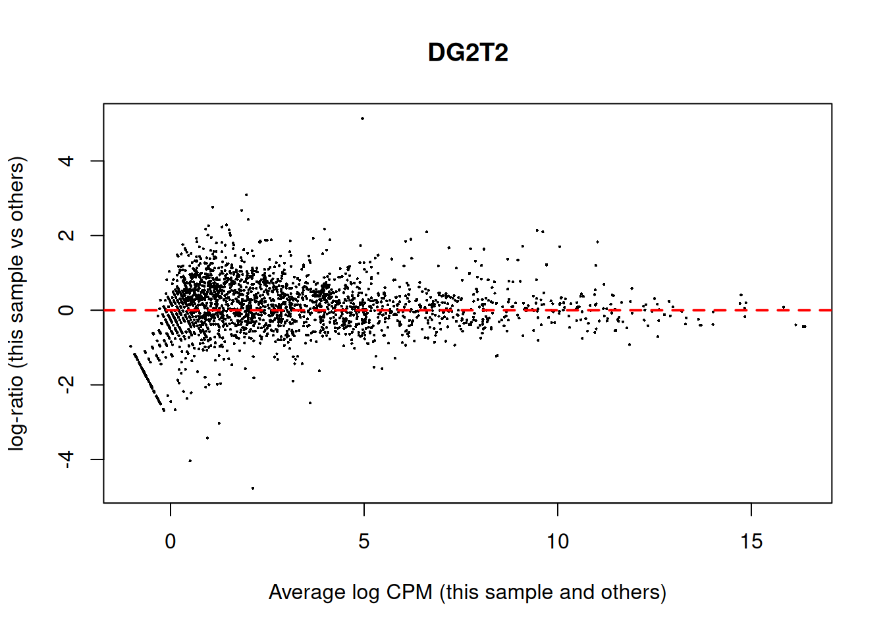
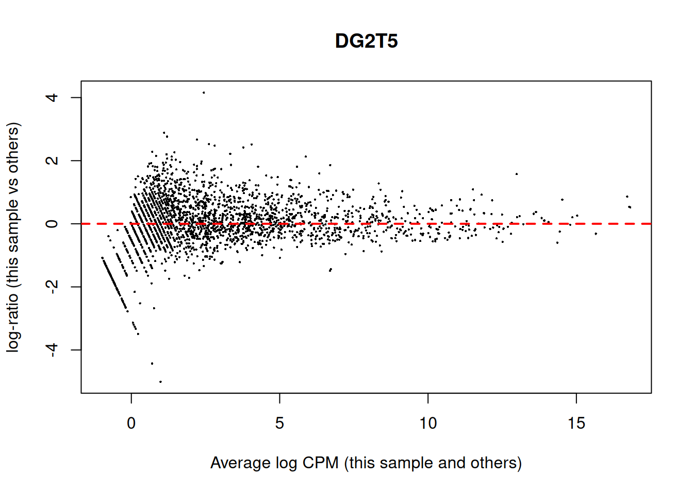

Descriptive statistics of read counts
Hierarchical clustering
Multidimensional scaling

Means difference plots










Quasi-likelihood F-test
## Coefficient: df_groups$GroupDG1
## logFC logCPM F PValue FDR
## Cluster-5165.0 -3.778488 3.7864821 20.94728 0.0001024006 0.3164248
## Cluster-3339.0 -3.788594 4.8815869 20.51185 0.0001161831 0.3164248
## Cluster-1863.0 -3.458183 3.8796697 17.86431 0.0002576997 0.4678967
## Cluster-5340.0 6.190391 1.3653514 16.33397 0.0004185516 0.5055466
## Cluster-666.0 4.862315 -0.3895843 15.30443 0.0005865341 0.5055466
## Cluster-1638.0 3.401726 -0.5287143 14.43673 0.0007853104 0.5055466
## Cluster-1121.0 3.210357 -0.5815962 12.98207 0.0013021853 0.5055466
## Cluster-3207.0 -3.024132 3.9406369 12.87720 0.0013516714 0.5055466
## Cluster-4787.0 -5.500143 -0.8905824 13.77956 0.0013742957 0.5055466
## Cluster-1222.0 -5.340980 -0.9313044 13.66404 0.0014251625 0.5055466